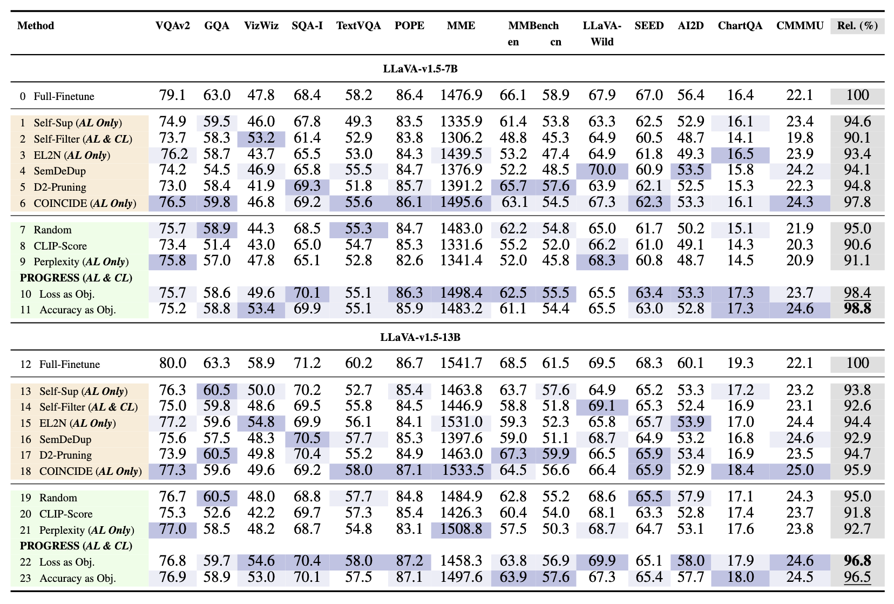

- Efficient Learning: Achieves near full-data performance using only 16-20% of labeled training data.
- Dynamic Selection: Periodically self-evaluates to identify skills where performance improves fastest relative to its prior state.
- Self-Contained: Requires no upfront answer annotations, no auxiliary reference VLMs, and no compute-heavy gradient computations.
- Scalable & Transferable: Shows strong cross-architecture generalization (e.g., LLaVA-1.5 to Qwen2-VL) without model-specific tuning.
Across 14 diverse vision-language benchmarks, PROGRESS achieves 98.8% relative performance on LLaVA-665K with 20% data.
-
